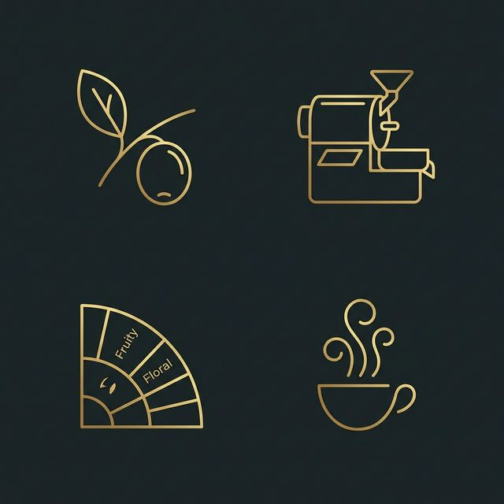

coffee 至高のカフェラテ設計
本日のエスプレッソとミルクの調和を整えます。
temp_preferences_custom ブレンド内容
%
%
menu_book コーヒー図鑑
知識という香りを添えて、一杯をより深く。

産地の物語
エチオピアの華やかな香りから、ブラジルのナッティなコクまで。
Science
焙煎の科学
浅煎りの酸味、深煎りの苦味。火がもたらす魔法の段階を学びます。
History
歴史と文化
カッファの森から世界中へ。コーヒーが歩んだ優雅な旅路。
newspaper 最新のコーヒー便り
世界から届く、新鮮なコーヒーの話題をどうぞ。
history コーヒー時間の記憶
まだ記録がございません。お嬢様の最初の一杯をお待ちしております。